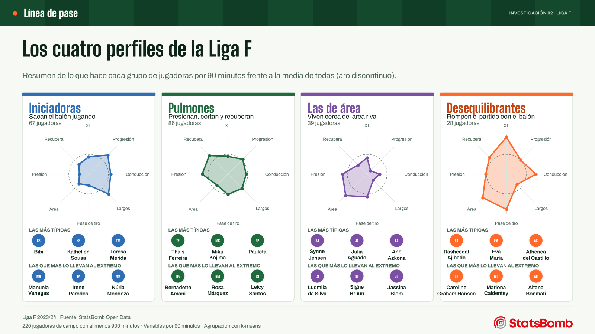
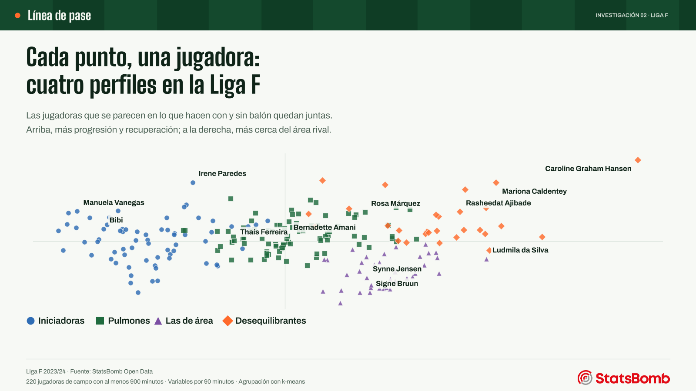
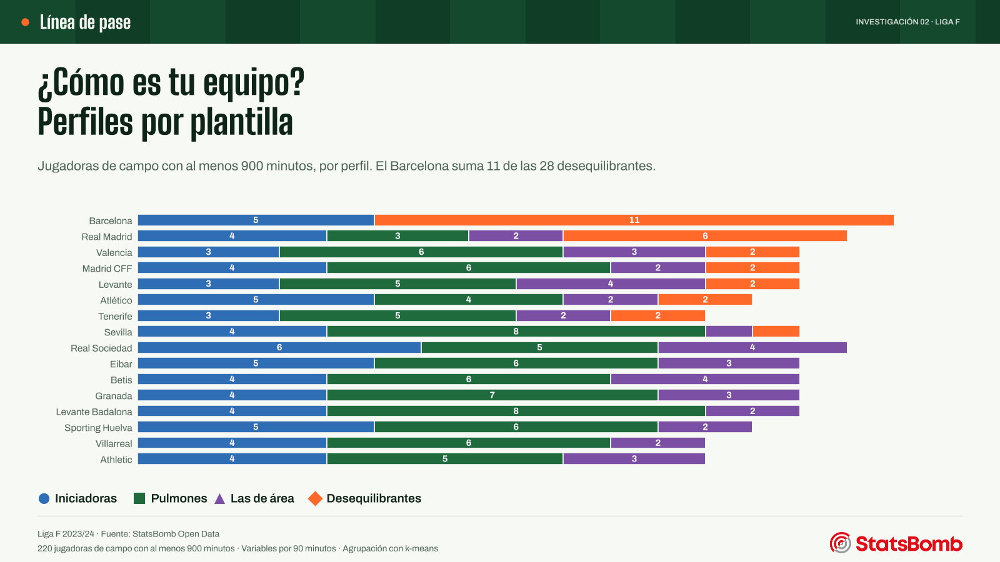

Proyectos / Investigación
Investigación · Fútbol femenino · Liga F 2023/24
¿En qué perfil está tu jugadora favorita?
En la alineación son defensas, centrocampistas y delanteras. Pero lo que hacen con el balón, y sin él, cuenta otra historia. Este estudio agrupa a 220 jugadoras de la Liga F 2023/24 según cómo juegan: salen cuatro perfiles con nombre propio.
- Pregunta
- ¿Qué tipos de jugadora hay en la Liga F según lo que hacen en el campo, más allá de su posición?
- Datos
- StatsBomb Open Data · 240 partidos · 835.429 eventos · 220 jugadoras de campo con al menos 900 minutos
- Herramientas
- Python (pandas, scikit-learn, Matplotlib) · k-means y PCA · código y datos
Resultados
Iniciadoras, pulmones, las de área y desequilibrantes
Iniciadoras (67). Centrales y laterales que inician la jugada: más pases largos y progresivos que nadie y muy poco juego cerca del área. 52 de las 67 son centrales.
Pulmones (86). El motor del equipo: presionan, recuperan e intersectan más que el resto, con un papel discreto en ataque. Son el perfil más numeroso: laterales (31), pivotes (26) y mediocentros (10), pero también 14 extremos.
Las de área (39). Delanteras y extremos que reciben en el área y presionan arriba, casi sin progresar con el balón. 28 son delanteras.
Desequilibrantes (28). Las que más amenaza generan: pases de tiro, centros, regates y xT muy por encima de las demás. Su amenaza esperada (xT) por 90 minutos es de 0,17, más de tres veces la del resto de jugadoras (0,05). Entre ellas están Caroline Graham Hansen (0,59) y Aitana Bonmatí, que en la alineación figura como mediocentro.

| Perfil | Jugadoras | Las más típicas | Las que más lo llevan al extremo |
|---|---|---|---|
| Iniciadoras | 67 | Bibi, Kathellen Sousa, Teresa Merida | Manuela Vanegas, Irene Paredes, Núria Mendoza |
| Pulmones | 86 | Thaís Ferreira, Miku Kojima, Pauleta | Bernadette Amani, Rosa Márquez, Leicy Santos |
| Las de área | 39 | Synne Jensen, Julia Aguado, Ane Azkona | Ludmila da Silva, Signe Bruun, Jassina Blom |
| Desequilibrantes | 28 | Rasheedat Ajibade, Eva Maria, Athenea del Castillo | Caroline Graham Hansen, Mariona Caldentey, Aitana Bonmatí |
Un mapa de 220 jugadoras
Cada punto es una jugadora. Las que se parecen en lo que hacen quedan juntas: a la izquierda, las que juegan más atrás y sacan el balón; a la derecha, las que viven cerca del área rival. Arriba están las que más progresan y recuperan.
Las fronteras no son tajantes: 26 jugadoras están casi a la misma distancia de dos perfiles. El mapa enseña un continuo con cuatro zonas reconocibles, no cuatro compartimentos.

El Barcelona tiene 11 de las 28 desequilibrantes
Por plantillas, el Barcelona suma 11 desequilibrantes y 5 iniciadoras, y ninguna jugadora de los otros dos perfiles. El Real Madrid es el segundo equipo con más desequilibrantes (6); en el resto de plantillas hay dos o menos. Muchas plantillas se parecen entre sí: mucho pulmón, alguna iniciadora, poca amenaza.

Método
De los eventos a los perfiles
Para cada jugadora con al menos 900 minutos (se excluyen las porteras) se calculan 18 variables por 90 minutos: pases progresivos, largos y de tiro, centros, conducciones progresivas, altura media de sus acciones, recepciones en el área, regates, presiones, recuperaciones, intercepciones, entradas, tiros, xG y la amenaza esperada (xT) del estudio anterior. Se descartan 4 por repetir información de otras (correlación mayor de 0,85) y quedan 14.
Las variables se estandarizan para que ninguna domine por escala, y las muy asimétricas pasan antes por un logaritmo. El análisis de componentes principales (PCA) sirve para dibujar el mapa; el agrupamiento se hace con k-means sobre todas las variables.
El número de perfiles se fija con una regla escrita antes de mirar los grupos: entre 4 y 7, con al menos 8 jugadoras por grupo, gana el que mejor combina el coeficiente de silueta y la estabilidad (índice de Rand ajustado en 200 remuestras de jugadoras). Con 4 perfiles la silueta es 0,23 y la estabilidad 0,80; con 5 baja a 0,21 y 0,69.
Como comprobación, con un mínimo de 600 minutos (247 jugadoras) o sin la xT, las jugadoras vuelven a agruparse de forma muy parecida (índice de Rand ajustado de 0,80 y 0,80).
Cómo leerlo
Son datos de la Liga F 2023/24: no describen el rendimiento ni el club actual de ninguna jugadora. Los perfiles resumen cómo juega cada una, no cuánto vale, y el equipo influye en lo que cada jugadora puede hacer con el balón.
Trabajo verificable
Datos, código y comprobaciones
Se descargaron 481 archivos de StatsBomb Open Data (commit fijado) con su huella SHA-256. El análisis se reproduce con un solo script y las pruebas automáticas comprueban la estandarización, el filtrado, el agrupamiento y las variables con casos de solución conocida.
Descargar las 220 jugadoras con su perfil (CSV)
Fuente: StatsBomb Open Data. Los eventos originales no se redistribuyen, como pide su acuerdo de uso.